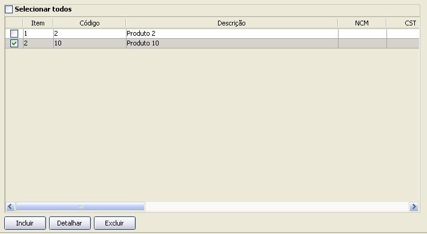

Software Emissor NF-e
Produtos e Serviços
Compreende os produtos e serviços da Nota Fiscal.
Pode-se incluir de um até 990 produtos/serviços na NF-e, embora recomende-se não sobrecarregar a NF-e para evitar problemas na sua transmissão.

Listagem de Produtos e Serviços
Inclusão de Produto/Serviço
Detalhamento/Edição de Produto/Serviço
Exclusão de Produtos/Serviços
Preenchimento dos campos de Produto/Serviço
Listagem de Produtos e Serviços
:
A listagem de todos os Produtos/Serviçso é exibida na aba de Produtos e Serviços, com as seguintes colunas:
Númeração do item inserido
Código
Descrição
NCM
CFOP
Unidade
Quantidade
Valor Unitário
Valor Total
Base de Cálculo do ICMS
Valor do ICMS
Valor do IPI
Alíquota do ICMS
Alíquota do IPI
Incluindo um Produto/Serviço
:
Na tela de Inclusão/Edição de Nota Fiscal eletrônica, aba de Produtos e Serviços
clicar em
Incluir
Preencher corretamente os campos do Produto/Serviço
Após o preenchimento dos campos corretamente, selecionar a opção
OK
. O produto/serviço será apresentado na listagem de produtos da NF-e
Detalhamento/Edição de Produto/Serviço
Na tela de Inclusão/Edição de Nota Fiscal eletrônica, aba de Produtos e Serviços, selecionar o produto desejado.
Na tela de detalhamento/edição do Produto, alterar os campos desejados
Após o preenchimento dos campos corretamente, selecionar a opção
OK
Exclusão de
Produto/Serviço
Na tela de Inclusão/Edição de Nota Fiscal eletrônica, aba de Produtos e Serviços, selecionar os produtos a serem excluídos
Clicar em
Excluir
Preenchimento dos campos de Produto/Serviço
Temos 8 abas de dados para o Produto/Serviço (cada aba será abordada em separado):
Aba Dados
Aba Tributos
Aba Informações Adicionais
Aba Declaração de Importação
Aba Veículo Novo
Aba Medicamento
Aba Armamento
Aba Combustível